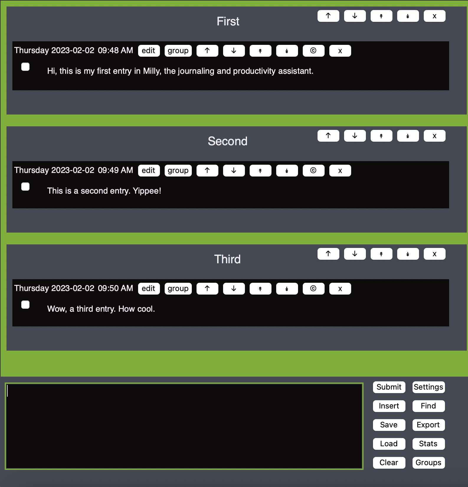

The highly customizable journal and thought collector.
Just type your thoughts and hit enter,
and they immediately get added to your list of entries,
along with the exact date and time you submitted them.
Save and load your files. Rearrange and edit your lists.
Arrange your entries into groups.
Export them to csv, txt, and pdf.
Use the Find feature to search your collected thoughts.
Lots of convenient keyboard shortcuts, so you can brainstorm
at a breakneck pace.

Download zip for MacOS
(probably only works on Apple Silicon machines)
Latest release
on Github